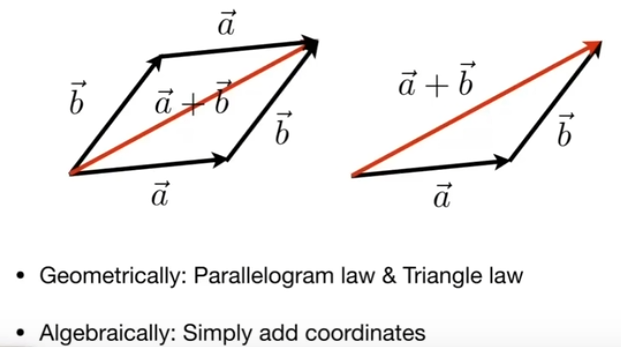
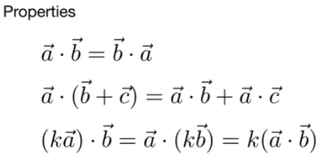
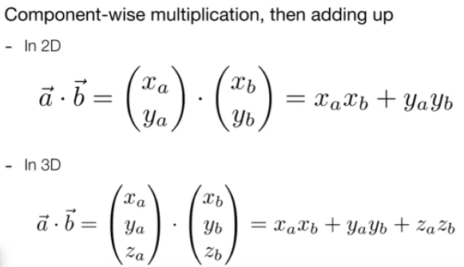
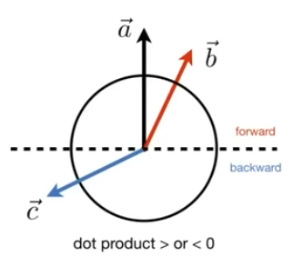
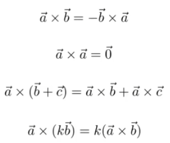
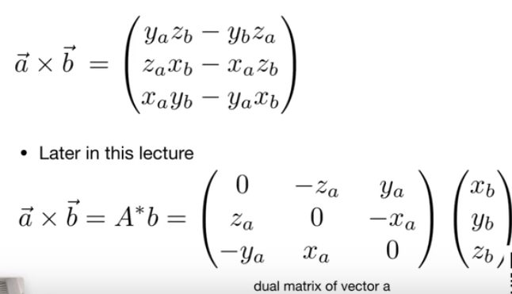
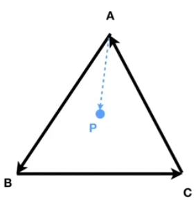
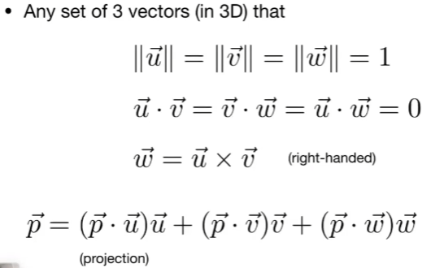
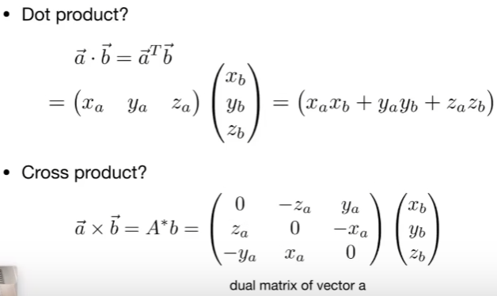

GAMES 101 L02-Review of Linear Algebra
Vectors
Definition
No absolute starting position; direction and length; .
Magnitude (length) of vector:
Unit Vector
Unit Vector: used to represent directions; length = 1; normalize vector to get a unit vector by .
Vector Addition

Cartesian Coordinates
X and Y can be any (usually orthogonal units) vectors.
Vector Manipulation
Dot (scalar) Product


Use:
- Find angle between two vectors(e.g.cosine of angle between light source and surface);
- Find projection of one vector on another;
- Decompose a vector;
- Measure how close two vectors are;
- Determine backward / forward.

In the figure above, consider as the base (forward), if another vector’s dot product with is positive, we consider these two vectors have approximately the same directions. Also, if the vectors are all unit vectors, when the result of dot product is closer to 1, we cosider these two vectors closer.
Cross (vector) Product
Cross product is orthogonal to two initial vectors; Direction determined by right-hand rule (four fingers rotating from to , thumb pointing to the result)(OpenGL uses left-hand coordinate sys); Useful in constructing coordinate systems.


Use:
- Determine left / right (more exactly, counter clock-wise or clock-wise)
- Determine inside / outside

Peform cross product between P and each edge vector, if the results are all positive or all negative, the point is inside the triangle; otherwise it’s outside the triangle.
Orthonormal Coordinate Frames

Matrices
Definations
Arrays of numbers
Adding and multiplication by a scalar: element by element
Multiplication by another matrix: . Element (i, j) in the product is the dot product or row i from A and column j from B.
Properties
- Non-communative: AB != BA
- Associative and distributive:
- (AB)C = A(BC)
- A(B+C) = AB + AC
- (A+B)C = AC + BC
Matrix Vector Multiplication
- Treat vector as a column matrix
- Used to transform points
Vector Multiplication in Matrix

Matrix Transpose
Identity Matrix and Inverse
,
GAMES 101 L02-Review of Linear Algebra
http://example.com/2024/12/31/GAMES101-L02-LinearAlgebra/